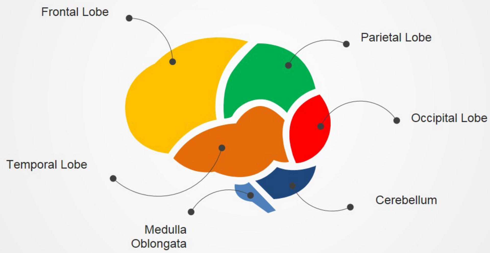
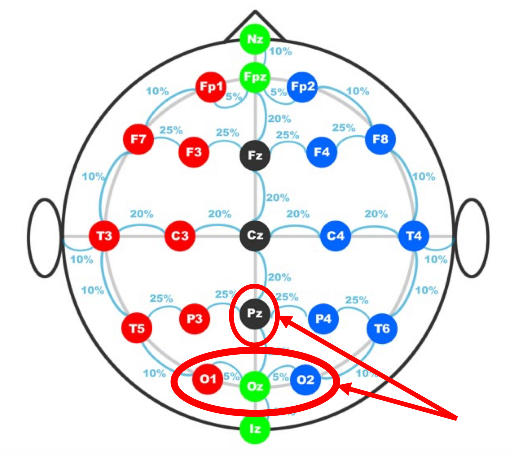
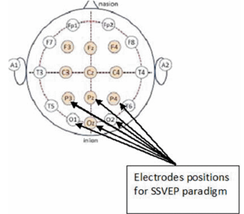
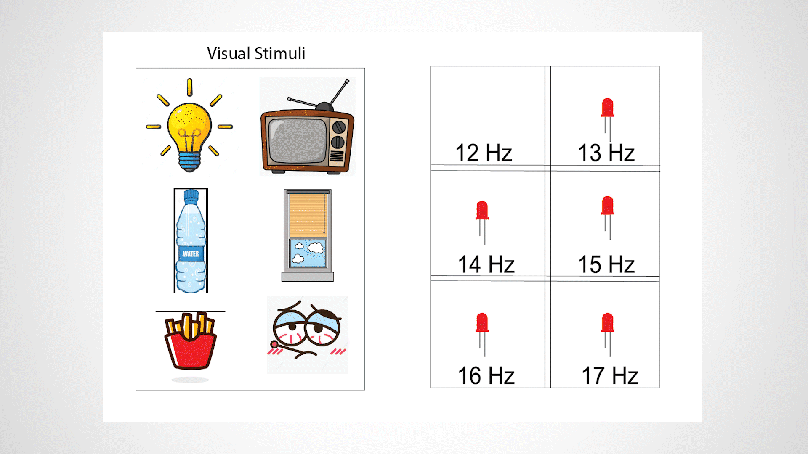
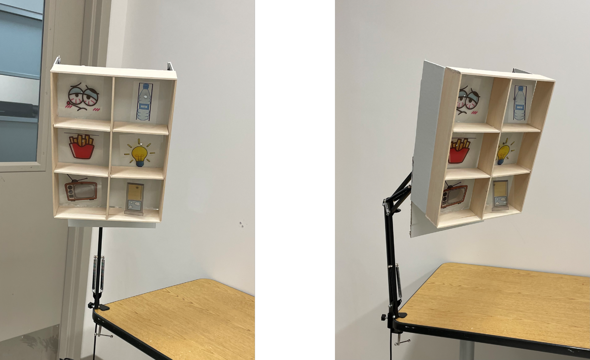
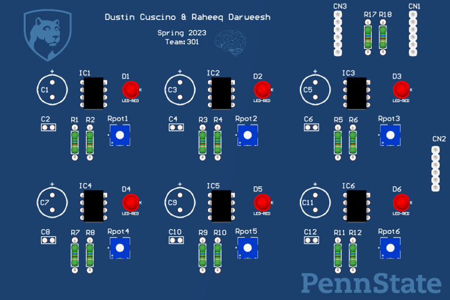
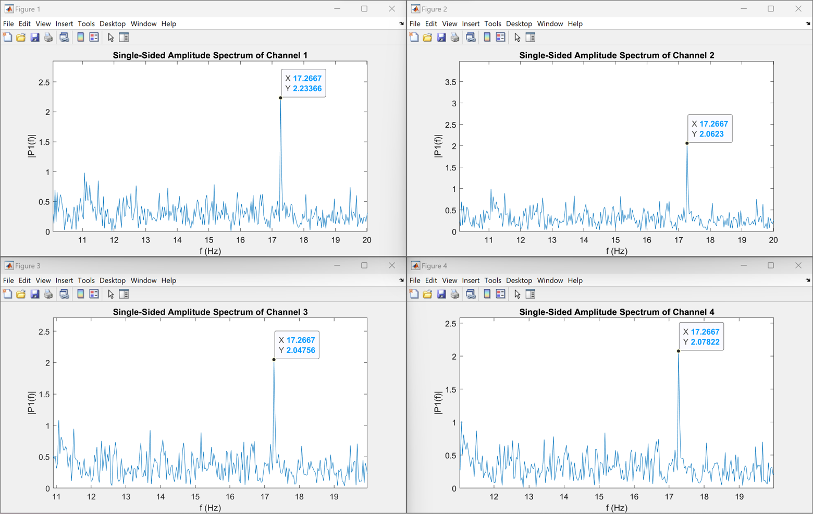
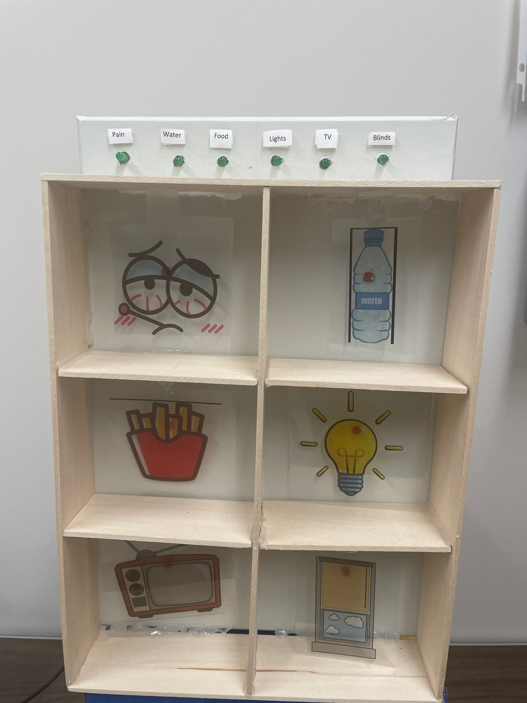
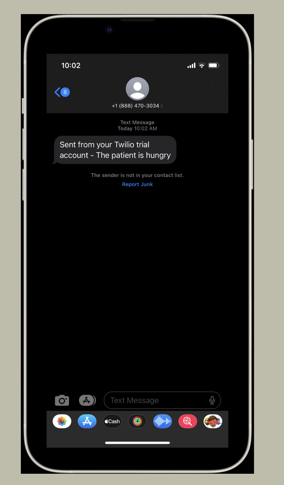

An SSVEP Based Brain Computer Interface System to Assist Locked-in Patients in Decision
Making
By: Raheeq Darweesh Dustin Cuscino Technical Advisor:
Dr. Nashwa Elaraby
The objective of our project is to create an affordable communication method that can be used
at homes to assist locked-in patients to express their basic needs, and this is done using EEG
non-invasive methods.
Brain Background
To better understand our project, a brief background of the brain is shown in this section. In the
table shown below, five main categories of the brain waves and their respective frequency
ranges are shown. Also from the table, the functionality of these brain waves in at which
frequencies they occur is also shown. For our project we will utilize the high alpha low beta
brain waves which range from 12 Hertz to 17 Hertz.
Frequency Range
When It Occurs
Gamma
32 to 100 Hz
Problem Solving
Beta
13 to 32 Hz
Alert / Thinking
Alpha
8 to 13 Hz
Relaxed
Theta
4 to 8 Hz
Sleeping
Delta
½ to 4 Hz
Deep Sleep
Here are the main sections of the brain, each lobe and its functionality are explained to
understand the chosen electrodes placements that pertain to this project.

Frontal
Lobe
The yellow region shown is known as the frontal lobe which is a which is mainly associated with
problem solving, emotions, memory, planning or control movement.
Parietal
Lobe
The green region shown is known as the parietal lobe which is associated with motivated
attention and control.
Temporal
Lobe
The green region shown is known as the parietal lobe which is associated with motivated
attention and control.
Occipital
Lobe
The red region shown is known as the occipital lobe which is the region of the brain that we
utilize in this project. The main function of this lobe is associated with visual processing. The
reason why we chose the high alpha low beta frequency range is because these brain waves
happen to be the strongest at the occipital region.
Here we show the 10-20 international electrode placement system. It is called the 1020
because the actual distances between adjacent electrodes are either 10% or 20% of the total
front-back or right-left distance from the skull. The letter Z refers to the number zero which
indicates that this is the center of the brain. As we can see, each electrode placement site has a
letter to identify the lobe and a number to identify where it is the left or the right side of the
brain. Odd numbers are referred to the left side of the brain and even numbers are referred to
the right side of the brain. The circled region is where we placed our electrodes for SSVEP
methods.

EEG Background: In order to study the brain waves, we utilize a process known as electroencephalography.
Electroencephalography can be broken down into two main categories, invasive and noninvasive, invasive is when the electrodes are implanted in the skull, for obvious reasons we
chose to go with the non-invasive methods. As if the non-invasive methods there are two
common types of electrodes that can be used, wet electrodes and dry electrodes. Wet
electrodes need an additional step which is applying a conductive gel to the electrode itself
before the placement. In this project we utilize wet electrodes in which we will discuss our
reasoning later in the presentation. Some popular procedures of EEG include the study of
evoked potentials, these evoked potentials are electrical signals produced from some form of
stimuli, for our project we utilize the steady state visually evoked potentials known as SSVEP.
The steady state visually evoked potential is a response in the brain that occurs when the retina
is excited by a visual stimulus, the brain then generates an electrical activity at the same
frequency of the visual stimuli. The picture shows the common electrodes placement positions
for SSVEP methods.

Equipment Used
The process of how we studied the brain waves using the SSVEP method is shown in this
section.
Using the combination of a biosensing board, wet electrodes and flickering LEDs, brain waves
are acquired and analyzed. It is important to note that these brain waves are in the microvolt
range. Therefore, the data acquisition process is so sensitive. The data analysis was then done
in two ways, offline, which is analyzing a recorded test and online which is a live stream data
analysis.
Here we have a sample display of our visual stimuli with a few commands that the locked-in
patient may ask for. These commands will be overlaid on the flickering LEDs on the right, each
LED is flickering at the designated frequency.

This is the orientation in which the patient will be looking at the stimuli, the distance between
the patient and the stimuli must be less than 100 centimeters.
To better visualize the process this orientation was added.
This is an example of how the visual stimuli will be presented to the patient. However, the final
product will follow a stricter set of safety standards.

Designed PCB to control the LEDs hardware: Now for the hardware implementation, as described before the visual stimuli is a set of LEDs
flashing at a specific frequency. Therefore, the implementation of hardware will be six 555
timer circuits, one for each LED. Here we have a PSPICE model of one of our 555 timers the 16
Hz. Due to the stimuli being so close in frequency a 3.9k resistor in series with a potentiometer
will be used to fine tune the frequency of each LED. The 555 circuit will then be powered from
the PWM pin of the Arduino, this allows us to control the period over which the LED will flash,
while the 555 circuit itself will determine the frequency of the flashing LED.

Setup for offline testing: To acquire the data from the EEG stream offline, the OpenBCI GUI was run to collect data and
store the data set as a .csv file. Firstly, the impedance test was run to ensure the electrodes
would acquire the data, following the impedance test the filter settings were changed to match
the needs of the project. For this specific project, a bandpass filter was applied from 12 Hz to 18
Hz. Once all parameters have been set the recording is then taken, during the recording the
user sat at approximately 55 cm from the stimuli, which was determined to be the optimal
distance through testing. The user would then focus on the flashing stimuli of their choice for
approximately 20 seconds, which was also determined through testing. A shorter time period of
staring at the stimuli would produce results, but the 20 second period gave optimal results. The
.csv file was then passed through a MATLAB code to confirm expected results.
Setup:
Results from running an offline test when the user is focusing on a 17Hz target frequency:

Setup for online testing: A live-feedback version of the same system was also utilized. By using the same style of setup in which the user sits 55 cm away from the stimuli, as well as placing the electrodes in the same orientation, similar results are obtained. The system uses a Python code to receive the filtered data from the OpenBCI GUI in the form of an LSL stream. Once an LSL stream has been connected to the Python code the data is then processed continuously to provide live feedback on what the patient has been focusing on over a specified amount of time. The analyzed data then provide what the user has been looking at over the specified amount of time, afterwards that choice is sent back to the visual stimuli to turn on the indicating LED showing the user which choice has been selected. Similarly, that choice is then used to send a SMS message to the caretaker, informing the caretaker of the command chosen by the user.
Updated stimuli used:

Results from running an online test when a person picks two commands for the user to look at:
Screenshot of an SMS alert sent to the caretaker:

Future Work
This is a prototype of an alert application system rather than a simple SMS alert system.